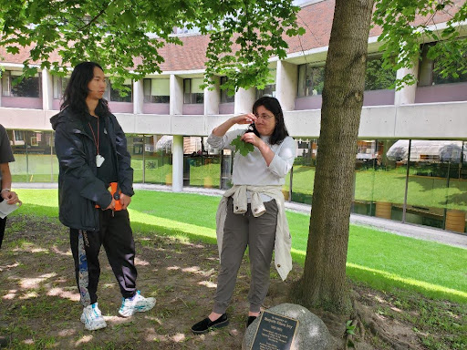

Neighbourwoods© GOES LIVE! JUNE 10TH - AUGUST 2ND, 2024
Thank you Dr. Danijela Puric and Nemo, for taking the time to teach us about our trees.
On Monday June 10th our tree inventory starts. Nemo is a Masters of Forestry student at the University of Toronto. He will be coming door to door, and asking if he can measure the diameter and height of your tree, assess it according to 28 criteria that contribute to the health and location of your tree. These include the lean of the tree, branch attachment, the condition of foliage, crown, roots, trunk, branches and more. Some of the residents of Craven Road attended the training session on Monday June 3rd and learned interesting facts about how to assess the health of trees. Resident volunteers are welcome to help Nemo with his measurements! Since the Longbranch Neighbourhood is also updating their study, we were joined by their eager students, some of whom we can also rely on when having questions about our trees. We look forward to learning more in the weeks to come.
We have heard from 50 interested residents so far... and are hoping to hear from more of you! Please email us at craven.road@yahoo.com if you would like Nemo to look at the trees on your property. For more details on Neighbourwoods© Our inventory area covers: Craven Road from Danforth Avenue to Queen Street East, Parkmount Road west facing side looking onto Craven Road, entire Rhodes Avenue western side of the street, facing onto Craven Road backyards, Ashdale Avenue eastern side of the street, facing the municipal fence.